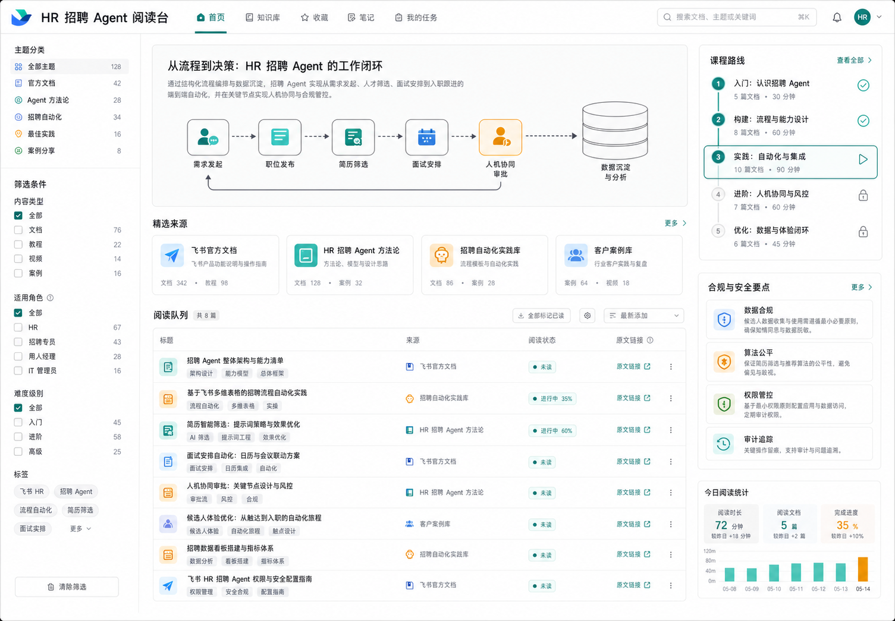

HR 招聘 Agent 阅读台
把已整理的飞书、Agent、招聘自动化资料放到一个可检索、可标记、可复盘的在线网页里。
课程资料地图
从“会用 AI”到“能架构业务 Agent”
这里收纳了 20 个已整理来源。公开网页不会整篇转载原文，而是提供阅读摘要、课程用途、重点问题和原文入口，方便你集中学习并准备讲师申请。

原文链接
全部资料
课程路线
把资料转成 45-60 分钟分享
边界说明
公开阅读页的内容边界
不做全文搬运
这个站点只提供阅读笔记、短摘要、课程关联和原文入口。受版权保护的文章请跳转原站阅读。
招聘场景保留人工审核
AI 可以辅助解析、摘要、评分建议和状态流转，但候选人去留、敏感沟通和 offer 决策应由人负责。
资料状态透明
已经深读和只是候选的资料会分开标注，避免把未验证信息当作课程结论。
待深读候选